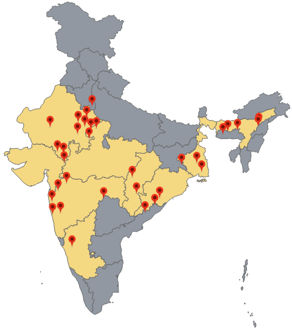
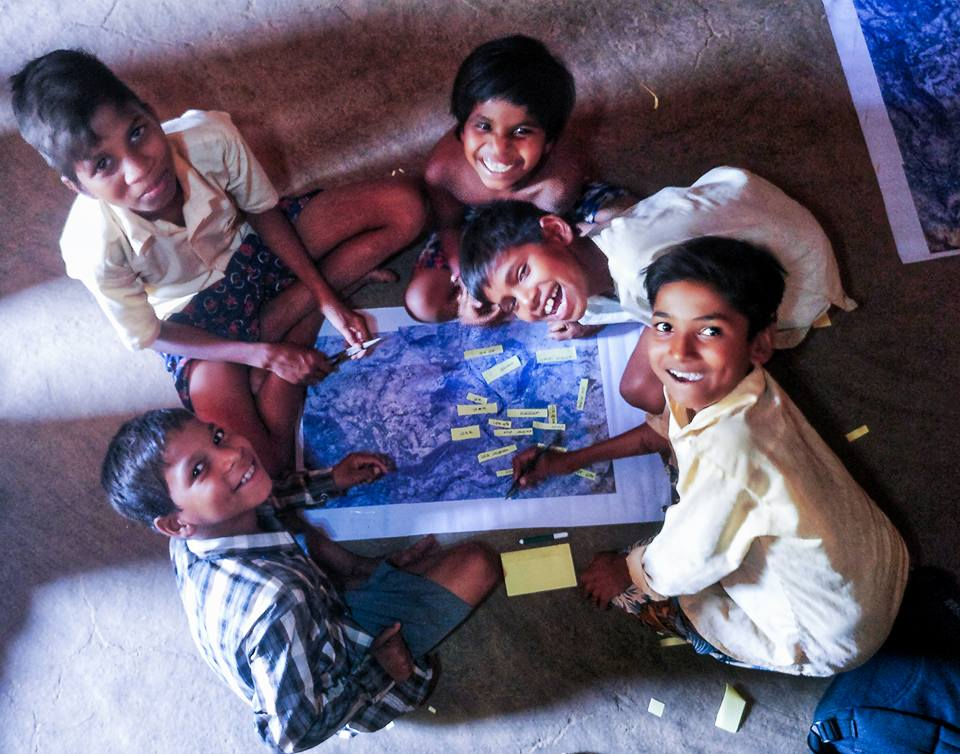
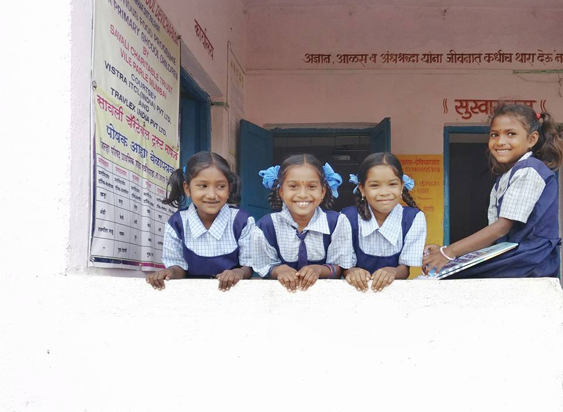

Our Vision
Nutrition Group-IIT Bombay aims at Strengthening the Grassroots of Child Nutrition
Study Methodology
Field study is a central part of the curriculum. We try to develop an understanding of issues at the grassroot level, which is facilitated through regular field-visits and interaction with different communities and stakeholders.

Field Work

Children, Our Asset

Children, Our Future
About Us
CTARA at IIT Bombay has a team of faculty members and students interested in issues of child malnutrition. Students in CTARA are already working on issues related to child malnutrition in specific areas, as well as for context specific planning at the District Level, both as part of their curricular activity and through UNICEF-CTARA Fellowships. These Fellowships are given to students from CTARA, Humanities and Social Sciences (H&SS) and Biological Sciences and Bio Engineering (BSBE). Till now, 14 Masters students have received this fellowship and have been involved in various projects covering different aspects of child malnutrition: nutrient-rich product development, maternal health, nutrition education and awareness, data collection and interpretation etc.. Moreover, there are 5 PhD Students and 5 Research Associates, deeply engaged in the area of nutrition. At present, we are actively engaged in different states of India e.g. Maharashtra, Chhattisgarh, Assam, Odisha etc.
Our Research Areas
Our Collaborators